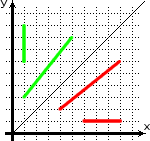
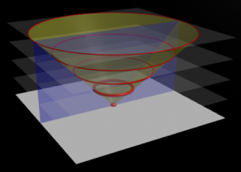

Физический смысл пространства-времени
В предыдущей заметке мы уже частично коснулись геометрического смысла рассматриваемого нами пространства-времени. Давайте теперь посмотрим, как оно соотносится с нашей реальностью.
Интервалы времени и расстояния
Все времениподобные интервалы описывают просто интервалы времени. Пространственноподобные отрезки соответствуют пространственным расстояниям.
Давайте снова посмотрим на рисунок из предыдущей заметки:

Зелёные отрезки отвечают интервалам времени (по три секунды, так как длинна обоих равна трём).
Красные отрезки отвечают интервалам расстояния, протяжённостью «три» в наших единицах. Напомню, что у нас единица расстояния равна расстоянию, которое проходит свет за одну секунду. То есть расстояние, равное «трём» равно 3с, что составляет 3·299,792,458 = 899,377,374 метров (в 70 раз больше диаметра земли).
Световой конус
Одним из важнейших объектов пространства-времени является световой конус. Что это такое?
Давайте на время представим, трёхмерное пространство-время, где два измерения — это наши обычные длинна и ширина, а по вертикали отложено время. Как в такой системе будет выглядеть процесс распространения света?
В нулевой момент времени, когда произошла вспышка, наше пространство изображено в виде белой горизонтальной плоскости:

Последующие моменты времени показаны прозрачными белыми плоскостями. Чем больше прошло времени от вспышки, тем дальше уходит световая волна (красные круги), а все точки, которые проходит волна в пространстве-времени, образуют конус (показан жёлтым).
В двухмерном пространстве-времени, показанном на рисунке синей плоскостью, свет вычерчивает две прямые (или, точнее, полупрямые). Причём, если мы будем придерживаться введённых ранее единиц измерения, то эти линии будут располагаться под углом 45 градусов. Это и есть точки отстоящие от начала координат на 0 единиц. А в начале координат, как вы помните, и произошла вспышка. То есть в терминах пространства-времени фотоны (частицы света) неподвижны, они не проходят никакого расстояния и не ощущают хода времени, оно для них просто стоит на месте.
Здесь надо понимать, что мы говорим о времени фотона, то есть о времени, которое показывают часы, прикреплённые к фотону. То же самое касается и расстояния. Кроме того, фотон покоится именно в терминах пространства-времени. Это не значит, что он проходит нулевое расстояние или нулевое время. Это значит только, что интервал между любыми двумя точками, через которые проходил фотон равен нулю.
Для вас, как для наблюдателя, может казаться, что фотон вполне успешно преодолевает не равные нулю расстояния и существует продолжительное время. Но мы вскоре увидим, что измеряемые нами промежутки времени и пространства зависят от нашей скорости и не являются универсальными характеристиками движения, каковой является пространственно-временной интервал.
Мировые линии и отсчёт времени
Сперва я хочу сказать несколько важных слов о том, как я буду выбирать и именовать оси и направления. Я не буду изменять традиции и согласно предыдущему рисунку буду располагать ось времени вертикально, а ось пространственных координат — горизонтально. Но пусть это не вводит вас в заблуждение! Горизонтальная ось никак не совпадает с пространством. Как мы скоро увидим, нет единого пространства, универсального для всех наблюдателей. То же самое касается и времени. Что бы не подвергать вас излишнему соблазну, я не буду подписывать оси. Перпендикулярные оси вообще имеют смысл только для покоящегося наблюдателя и не чуть не лучше и не хуже бесконечного числа других осей, задающих пространство и время всех возможных наблюдателей.
Как известно, никакое тело и никакой сигнал не может двигаться быстрее света, поэтому все мировые линии движущихся тел всегда лежат внутри светового конуса.
При этом пройденные интервалы (в терминах пространства-времени) являются времениподобными и имеют смысл времени, прошедшего для движущегося наблюдателя.
На следующем рисунке изображён световой конус (два синих луча с наклоном в 45 градусов) и линии точек, удалённых от начала координат на 4 и 8 секунд (две кривые, обозначенные «t=4» и «t=8»).
На этом же рисунке изображены две мировые линии. Ярко-зелёная (проходящая через точки O, E, D, A) — это линия покоящегося наблюдателя. Тёмно-зелёная (проходящая через точки O, J, C, B) — наблюдатель, движущийся со скоростью c/2, или в наших единицах — 1/2.
Часы покоящегося наблюдателя покажут 4 секунды в точке E, часы движущегося наблюдателя покажут тоже время в точке J. И точка E, и точка J лежат на линии «t=4» и в терминах пространства-времени равноудалены от точки старта наблюдателей O.
Аналогично часы обоих наблюдателей покажут 8 секунд в точках A и B, лежащих на линии «t=8».
Одновременные пространства
Одновременное пространство наблюдателя — это то пространство, которое по мнению наблюдателя существует в данный момент.
Строго говоря, это то пространство (или те точки пространства-времени), все часы в котором сохраняют синхронность с часами наблюдателя. Оттолкнувшись от этого определения можно изложить доказательства более строго, но так как я не буду здесь приводить строгих доказательств, то и строгое определение оказывается излишним.
Естественно для разных наблюдателей эти пространства будут разными, они являются касательными к линиям равного времени.
Я бы не хотел здесь подробно рассматривать, почему именно касательными. Заинтересовавшиеся читатели могут найти объяснение в специальной литературе. Однако это утверждение можно легко подкрепить простыми соображениями.
Наблюдатель всегда может найти в своём одновременном пространстве точки, которые находятся рядом с ним. Эти точки, конечно будут лежать на кривых равного времени. Оттолкнувшись от этого направления (которое задаёт направление касательной к кривым равного времени) можно построить всё протяжённое одновременное пространство.
Одновременные пространства наших двух наблюдателей в моменты «t=4» и «t=8» показаны на рисунке красными и оранжевыми линиями.
Из построения видно, что так как угол наклона мировых линий всегда больше 45 градусов, то угол наклона одновременных пространств всегда меньше 45 градусов. То есть одновременные пространства всегда пространственноподобны.
На пространственных линиях на рисунке показаны единичные интервалы (в терминах пространства времени).